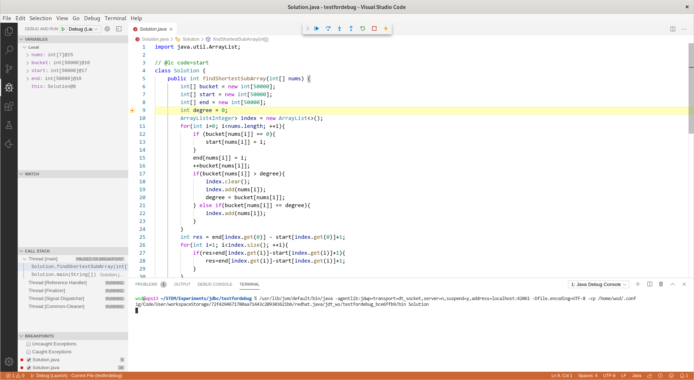

Prerequisites
- VSCode
- node.js
- Java programming environment
Install VSCode extensions: Java development pack, LeetCode, etc.
Debugger config
First, create a file specifically for debugging, say Solution.java.1
2
3
4
5
6
7
8
9
10
11
12
13
14
15
16class Solution {
public int func(int[] nums) {
...
}
public static void main(String[] args) {
// Create a new Solution instance
Solution solution = new Solution();
// Create a test case
int testCase[] = {1,2,2,3,1,4,2};
// Get the answer
int answer = solution.func(testCase);
// Print the answer
System.out.println(answer);
}
}
Then open File>Preferences>Settings, uncheck java.debug.settings.forceBuildBeforeLaunch or add "java.debug.settings.forceBuildBeforeLaunch": false into .vscode/settings.json.
Next create .vscode/launch.json under the folder and add1
2
3
4
5
6
7
8
9
10
11
12
13
14{
// Use IntelliSense to learn about possible attributes.
// Hover to view descriptions of existing attributes.
// For more information, visit: https://go.microsoft.com/fwlink/?linkid=830387
"version": "0.2.0",
"configurations": [
{
"type": "java",
"name": "Debug (Launch) - Current File",
"request": "launch",
"mainClass": "${file}"
}
]
}
Finally open Debug extension panel.
